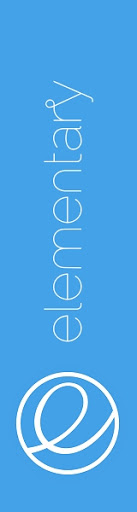

Jarek "Pasha" Jarząbkowski
Polski zawodowy gracz e-sportowy w grach serii Counter-Strike. Były reprezentant takich formacji jak ESC Gaming, Universal Soldiers czy Virtus.pro. Do 2010 roku grał w Counter-Strike’a 1.6 w drużynach amatorskich. W lutym dołączył do Frag eXecutors, z którym zajął 3. miejsce na World Cyber Games 2010. W 2011 wraz z ESC Gaming był ostatnim mistrzem świata w CS 1.6 na Intel Extreme Masters VI, a także wygrał World Cyber Games 2011. W 2012 roku zaczął grać w nowo wydaną grę Counter-Strike: Global Offensive. 25 stycznia 2014 dołączył do zespołu Virtus.pro, z którym wygrał m.in. EMS One Katowice 2014, StarLadder i-League Invitational #1, E-League Season 2016, DreamHack Bucharest. Pod koniec 2018 roku opuścił aktywnie grający skład Virtus.pro, jednak pozostał w klanie, nie ujawniając swojej oficjalnej roli. W lutym 2019 ostatecznie rozstał się z drużyną. W swojej karierze wygrał dotychczas indywidualnie ponad 623 000 dolarów amerykańskich (stan na 4 stycznia 2020). Łącznie w karierze wygrał 43 oficjalne turnieje, 26 razy był drugi i 42 razy kończył swój udział na półfinałach (stan na 4 stycznia 2020). Kilkukrotnie był wyróżniany miejscem w czołowej dwudziestce zestawienia najlepszych graczy roku według serwisu HLTV.org. W roku 2020 dołączył do Emeritos Banditos wraz z Izakiem. We wrześniu 2020 roku został ambasadorem amerykańskiej organizacji Team Liquid.
